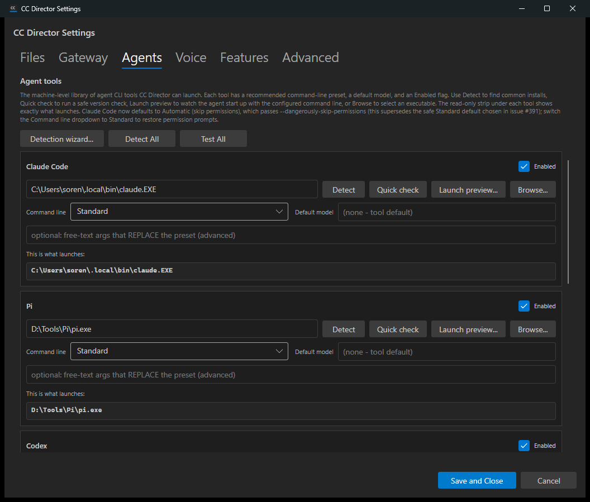
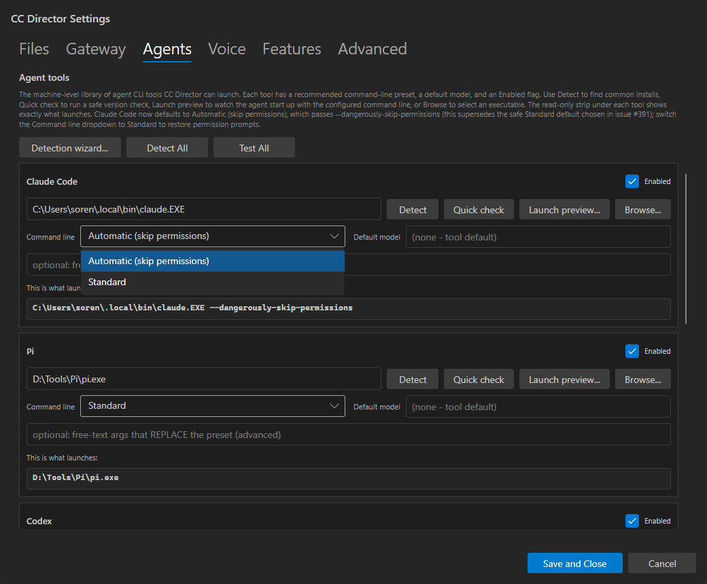
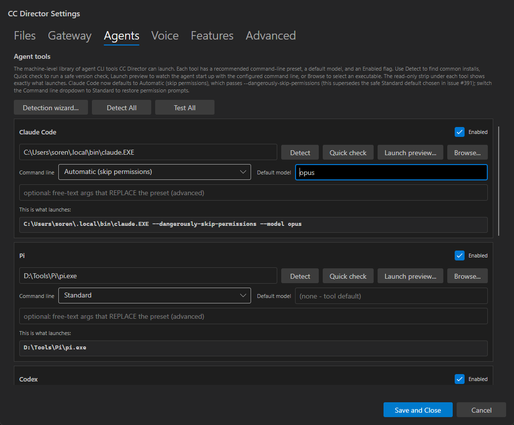
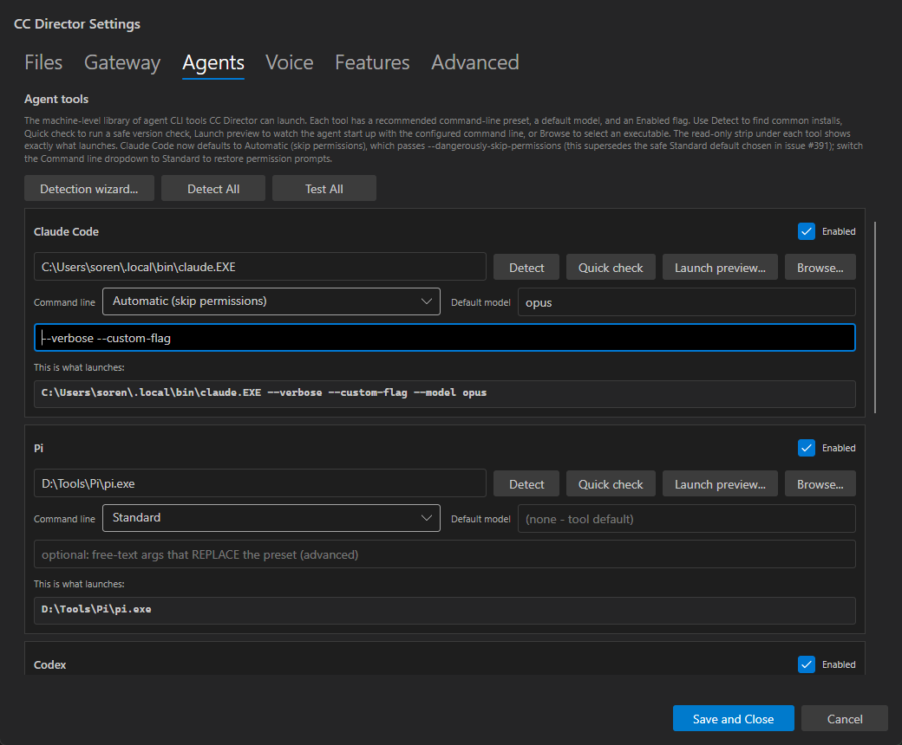
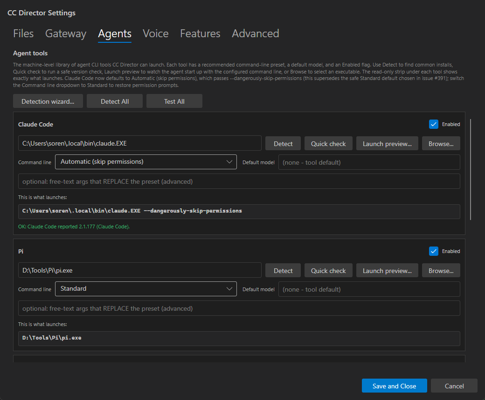
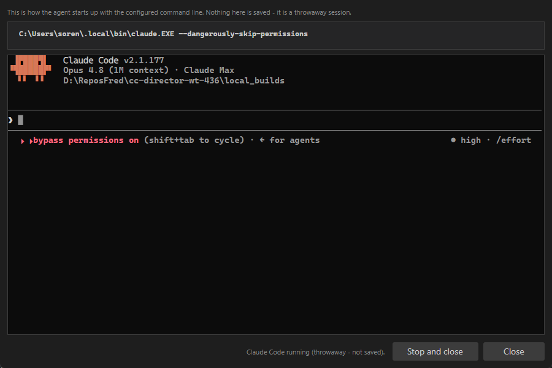
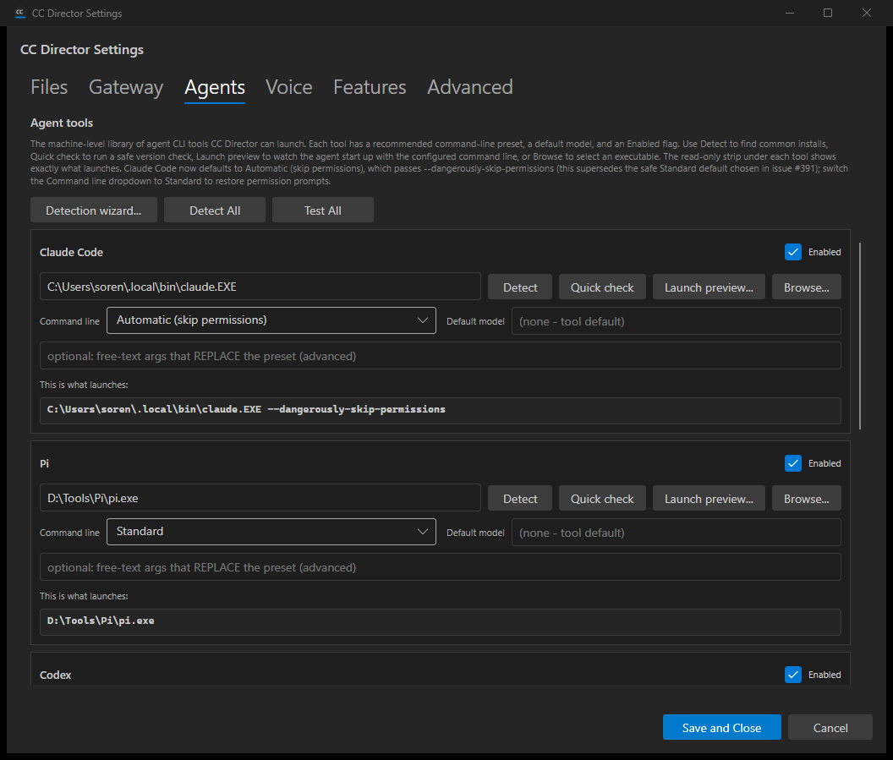

Developer Agent proof report. Branch issue-436-agents-tab-redesign. Verified on a slot-8 test Director (Control API http://127.0.0.1:7879, build v0.6.23) on SOREN_NORTH.
SettingsDialog.axaml default size 760x680 -> 1040x860 so at least 3 agent-tool cards are visible without scrolling.AgentToolConfig.ResolveEffectiveCommandLineArguments() so it matches a real launch.LaunchPreviewDialog reuses CcDirector.Terminal.Avalonia + ConPtyBackend to start the agent with the exact resolved command line in a disposable, never-persisted, never-rostered session, with the command shown at the top and Stop-and-close / Close controls that tear the process down on exit.AgentToolCatalog.cs Claude presets reordered so "Automatic (skip permissions)" is the default (index 0). XML doc comments and the Agents-page hint text updated to describe this and reference that it supersedes issue #391. An explicitly-saved prior preset is preserved.--model composition that was duplicated in App.BuildClaudeDefaultArgs and SettingsDialog.ApplyClaudePresetToRunningOptions moved into AgentToolConfig.ResolveEffectiveCommandLineArguments(), the single source of truth shared by App launch wiring and the preview.| AC | Expected | Actual (proof) | Status |
|---|---|---|---|
| AC1 | 3+ full cards visible at default size, no scrolling | At 1040x860, Claude + Pi + Codex (header) visible without scrolling (ac1-ac9 screenshot) | PASS |
| AC2 | Read-only monospace "This is what launches:" strip on every card | Strip present on Claude and Pi (and Codex/Gemini/OpenCode in markup), monospace, read-only | PASS |
| AC3 | Preview reflects preset: Automatic -> exe + --dangerously-skip-permissions; Standard -> exe only, live | Standard read claude.EXE; selecting Automatic changed it to claude.EXE --dangerously-skip-permissions with no save (ac3 screenshot + UIA value reads) | PASS |
| AC4 | Preview reflects model + override (override replaces preset args) | Model "opus" -> ... --model opus; override "--verbose --custom-flag" replaced the preset's skip-permissions while keeping --model opus (ac4 screenshots) | PASS |
| AC5 | Quick check runs the version probe, reports pass/fail + version | Quick check reported "OK: Claude Code reported 2.1.177 (Claude Code)." (ac5 screenshot) | PASS |
| AC6 | Launch preview popup shows the exact command, a live terminal, and (Automatic) Claude's permission-bypass indication | Popup top shows claude.EXE --dangerously-skip-permissions; live terminal shows Claude Code v2.1.177 running with "bypass permissions on (shift+tab to cycle)" (ac6 screenshot) | PASS |
| AC7 | Closing tears down the throwaway process; no roster session added | GET /sessions returned [] during and after; log: throwaway process pid=33464 stopped and disposed; process confirmed gone | PASS |
| AC8 | Unconfigured Claude (no config node) loads Automatic + skip-permissions preview | With agent.tools.claude removed, dropdown loaded "Automatic (skip permissions)" and preview claude.EXE --dangerously-skip-permissions (ac8 screenshot + UIA reads) | PASS |
| AC9 | Pre-seeded Standard config still loads as Standard (not overwritten) | With claude.preset = "Standard" seeded, dropdown loaded "Standard" and preview claude.EXE (ac1-ac9 screenshot + UIA reads) | PASS |
| AC10 | Catalog doc comments + hint text describe Automatic default and reference #391 | See diff below | PASS |
| AC11 | Clean dotnet build cc-director.sln + VisualStyle compliance | Build succeeded, 0 Warning(s), 0 Error(s); screenshots show dark-theme tokens honored | PASS |
AgentToolCatalog.cs Claude entry comment (after):
// Claude Code (issue #436, supersedes #391): "Automatic (skip permissions)" is the // recommended default (index 0), so a freshly configured Claude launches with // --dangerously-skip-permissions. The STANDARD (no skip-permissions) preset is offered // as the non-default alternative.
Agents-page hint text (after):
Claude Code now defaults to Automatic (skip permissions), which passes --dangerously-skip-permissions (this supersedes the safe Standard default chosen in issue #391); switch the Command line dropdown to Standard to restore permission prompts.






GET /sessions during preview: [] GET /sessions after close: [] healthz sessions count: 0 [LaunchPreviewDialog] StartPreview: started pid=33464 [LaunchPreviewDialog] BtnStopClose_Click [LaunchPreviewDialog] TearDownAsync [LaunchPreviewDialog] TearDownAsync: throwaway process pid=33464 stopped and disposed (process 33464 confirmed gone)

No architecture or security drift. The change touches existing containers (CcDirector.Avalonia,
CcDirector.Core, and reuses CcDirector.Terminal.Avalonia) with no new container, no new
external surface, and no security-relevant behavior beyond the Claude default-preset change (which is a
deliberate, approved product decision with an always-visible preview safety net). No DT-rule is affected.
dotnet build cc-director.sln
Build succeeded.
0 Warning(s)
0 Error(s)
Affected unit tests (AgentToolCatalog, AgentToolConfig, ToolDetectionWizardModel, ClaudeAgentDefaultArgs): Passed 28, Failed 0.
I believe this is finished.
All 11 acceptance criteria are met with proof, the solution builds clean (0 warnings, 0 errors), the affected tests pass, and the UI honors docs/VisualStyle.md (dark-theme tokens, monospace preview strip, borderless Hand-cursor buttons).